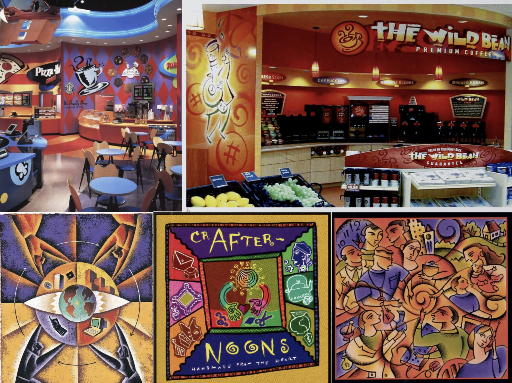
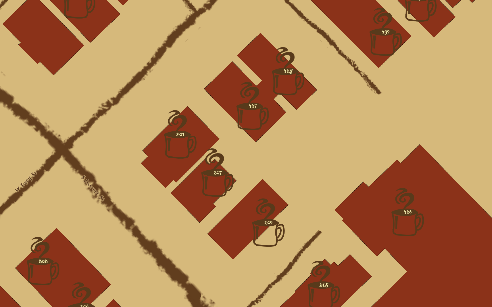
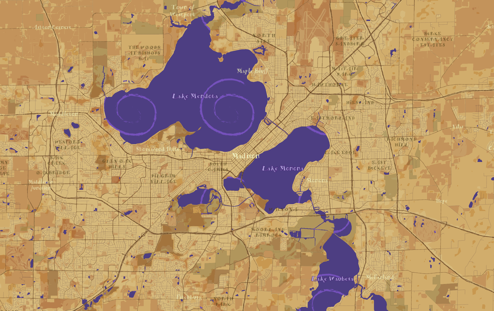
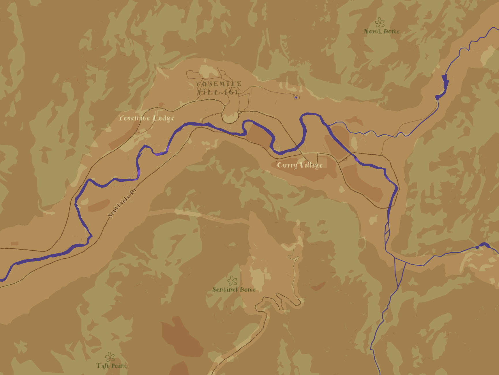
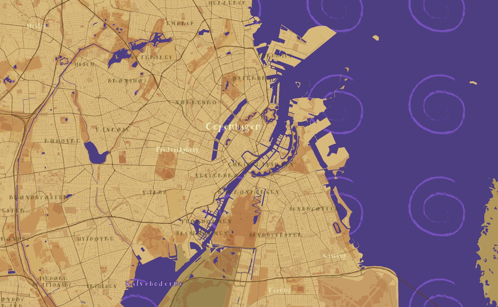
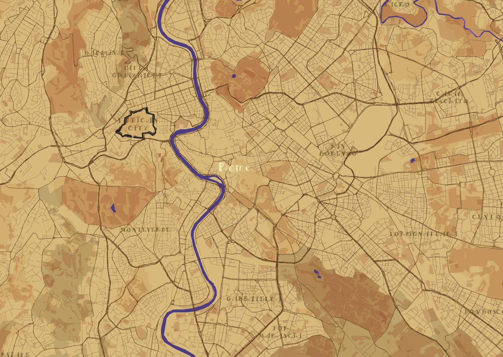

Retro Roast
My style is called Retro Roast and is based on the Global Village Coffeehouse aesthetic of the 1980s and 1990s.

I drew inspiration from art pieces and restaurant aesthetics from this era.
In the map, at high zoom levels, buildings are represented by coffee cups.

As you zoom in, the map highlights different elements and colors from the aesthetic.




Take a look at a few different geographies, starting with Madison, Wisconsin.
Yosemite National Park, California
Copenhagen, Denmark
Rome, Italy
See the full map style below!
Credits:
Map created with Mapbox Studio
Data from openstreetmap